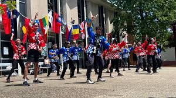
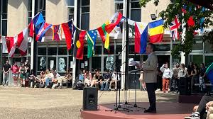

| Block A | Block B | Block C | Block D | Block E | Block F | Home | Block S | Switch CSS |
L BlockNarrabundah College's L block is a dynamic hub where students immerse themselves in the study of languages and cultures. In its classrooms, guided by dedicated instructors, students engage in interactive lessons to master grammar, vocabulary, and pronunciation. From French to Japanese, Spanish to Mandarin, L block offers a diverse array of language courses tailored to students' interests. Through immersive experiences, students gain proficiency in their chosen language while also developing a deeper understanding of its associated culture. Beyond language acquisition, L block fosters global citizenship and cross-cultural understanding. Students emerge with linguistic skills and cultural competence, ready to navigate an interconnected world with empathy and respect. |
 |
|  |
Still L BlockNarrabundah College's L block serves as a vibrant center for linguistic exploration and cultural immersion, where students embark on a journey to master the art of language. Within its classrooms, the rich tapestry of global communication unfolds as students delve into the study of various languages and cultures. At the heart of L block, language classrooms buzz with activity as students engage in lively conversations, linguistic exercises, and cultural exchanges. Guided by passionate instructors, they unravel the intricacies of grammar, vocabulary, and pronunciation, building the foundation for proficiency in their chosen language. From French to Japanese, Spanish to Mandarin, L block offers a diverse range of language courses tailored to students' interests and aspirations. Through immersive experiences and interactive learning resources, students not only develop language skills but also gain a deeper understanding and appreciation of the cultures and societies that speak these languages. Beyond the classroom, L block fosters a sense of global citizenship and cross-cultural understanding, preparing students to thrive in an increasingly interconnected world. Through language study, students develop empathy, tolerance, and respect for diversity, laying the groundwork for meaningful relationships and international cooperation. As students navigate the corridors of L block, they emerge with a newfound appreciation for the power of language to bridge divides, forge connections, and foster understanding. Equipped with linguistic proficiency and cultural competence, they are poised to embark on a journey of lifelong learning and global citizenship. |